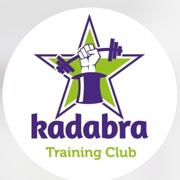
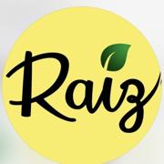

Yogur griego con frutilla
Con colchón de frutilla en presentaciones de 150 g y 250 g.
Si buscás yogur griego en Salta, en Nutrir encontrás opciones con colchón de frutilla, variedades sin colchón y sin azúcar agregada, además de kéfir de agua y vinagre orgánico de sidra de manzana.
Consultá disponibilidad y presentaciones directamente por WhatsApp. No publicamos precios en la web.
Nutrir reúne distintas presentaciones para quienes buscan yogur griego, kéfir de agua y vinagre orgánico de sidra de manzana en Salta Capital. Podés consultar por WhatsApp o acercarte a nuestros puntos de venta.
Con colchón de frutilla en presentaciones de 150 g y 250 g.
Sin colchón en 250 g, 350 g y 500 g, más formato King de 3 kg sin frutas.
Disponible en presentación de 500 ml. Consultá disponibilidad por WhatsApp.
Vinagre orgánico de sidra de manzana en presentación de 500 ml.
Además de pedir directamente por WhatsApp, ya podés encontrar productos Nutrir en estos puntos de venta.

Encontrá productos Nutrir en este punto de venta de Salta Capital.

Encontrá productos Nutrir en este punto de venta de Salta Capital.
Elegí la presentación que necesitás y consultá disponibilidad de forma simple.
Atención directa por WhatsApp y presencia en puntos de venta locales.
Disponibles en las presentaciones de yogur sin colchón.
Disponible en yogur griego de 150 g y 250 g.
Consultá productos, presentaciones y disponibilidad desde el celular.
La web funciona como catálogo. Elegís el producto, abrís WhatsApp y coordinás tu compra.
Consultar ahoraSeleccioná el producto y la presentación que querés.
El botón abre WhatsApp con el producto ya escrito.
Confirmá disponibilidad, forma de entrega y pago.
Información rápida sobre yogur griego, kéfir, vinagre orgánico y puntos de venta.
Podés pedir yogur griego Nutrir directamente por WhatsApp y también encontrar productos Nutrir en Kadabra Training Club y Raíz, en Salta Capital.
Sí. Tenemos opciones sin colchón y sin azúcar agregada de 250 g, 350 g y 500 g, además del formato King de 3 kg sin frutas.
Las presentaciones con colchón de frutilla son de 150 g y 250 g.
Sí. Nutrir ofrece kéfir de agua en presentación de 500 ml. Consultá disponibilidad por WhatsApp.
Sí. Tenemos vinagre orgánico de sidra de manzana en presentación de 500 ml.
Los precios no se publican en la web. Podés consultarlos directamente por WhatsApp.
Escribinos y te confirmamos disponibilidad.